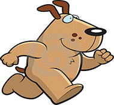

|
C |
Dog Distance |
|
|
Input |
Standard Input |
|
|
Output |
Standard Output |
|

Two dogs, Ranga and Banga, are running randomly following two different paths. They both run for T seconds with different speeds. Ranga runs with a constant speed of R m/s, whereas Banga runs with a constant speed of S m/s. Both the dogs start and stop at the same time. Let D(t) be the distance between the two dogs at time t.
The dog distance is equal to the difference between the maximum and the minimum distance between the two dogs in their whole journey.
Mathematically,
Dog Distance = {max (D(a)) 0 <= a <= T} – {min (D(b)) 0 <= b <= T}
Given the paths of the two dogs, your job is to find the dog distance.
Each path will be represented using N points, (P1 P2 P3 ... PN). The dog following this path will start from P1 and follow the line joining with P2, and then it will follow the line joining P2-P3, then P3-P4 and so on until it reaches Pn.
Input starts with an integer I(I≤1000), the number of test cases.
Each test case starts with 2 positive integers A(2≤A≤50), B(2≤B≤50). The next line contains the coordinates of A points with the format X1 Y1 X2 Y2 ...XA YA, (0≤ Xi,Yi ≤1000). These points indicate the path taken by Ranga. The next line contains B points in the same format. These points indicate the path taken by Banga. All distance units are given in meters and consecutive points are distinct. All the given coordinates are integers.
Note that the values of T, R and S are unknown to us.
For each case, output the case number first. Then output the dog distance rounded to the nearest integer. Look at the samples for exact format.
|
Sample
Input |
Sample
Output |
|
2 2 2 0 0 10 0 0 1 10 1 3 2 635 187 241 269 308 254 117 663 760 413 |
Case 1: 0 Case 2: 404 |